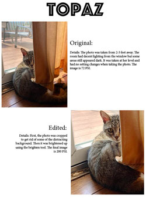
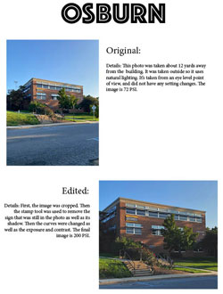
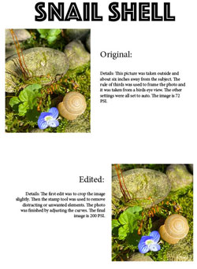
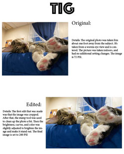

Sofia Magill's Photos |
||
|
 
Full Size Here |
  |
|
|
For this project, we had to take and edit four photos. We focused on lighting, color, composition, and different elements that make for a good photo. We needed to have at least one be indoors and at least one be outdoors and have three different composition techniques. Once we had our photos edited, we put both the origninal and the edited photos in an InDesign file and describe what each photo is as well as the changes we made to the photo. | ||
|
© 2024 Sofia Magill | ||